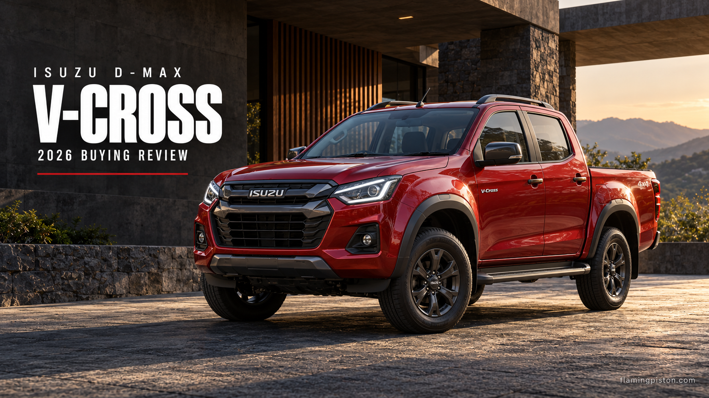

Isuzu V-Cross Review 2026: Pickup Practicality and 4WD

AI editorial illustration: FlamingPiston.
The V-Cross should be bought for what a pickup allows you to carry, not simply because it looks different from an SUV. A separate load bed can make sense for bulky or dirty equipment. It also creates questions about parking, weather protection and security that a normal enclosed luggage compartment does not raise in the same way.
Specification-based buying review, checked 23 October 2026. We have not road-tested this vehicle for this article. Quoted figures are manufacturer information; recommendations are our editorial assessment.
Key Specifications at a Glance
| Item | Published information |
|---|---|
| Engine | 1,898 cc diesel; 120 kW; 360 Nm |
| Current listed transmissions | Six-speed manual or automatic |
| Overall length | 5,295 mm |
| Inner load bed | 1,485 × 1,530 × 465 mm |
What Is Current, and What Needs a Quote?
Isuzu’s current product table lists 4WD Z manual, 4WD Z Prestige manual and 4WD Z Prestige automatic versions. Its brochure explicitly identifies the refreshed 2026 V-Cross. However, we did not verify a complete current official price list during this check, so this review does not recycle an older launch price as today’s figure.
Ask for a quotation with the model year, exact version and factory equipment stated. If the dealer offers a canopy, cover or other accessories, price those separately. The pickup that meets your needs may cost noticeably more than the bare vehicle after the load area is equipped.
Diesel and 4WD Hardware
Isuzu lists a 1.9-litre diesel producing 120 kW and 360 Nm, with six-speed manual and automatic choices. The current table also identifies shift-on-the-fly four-wheel drive and an automatic differential lock. Read the operating instructions before choosing a drive mode; the name of a system is not a substitute for knowing its limits.
For mixed commuting and touring, the automatic would be our first version to assess. A manual may appeal if its price and operation suit you. Neither choice establishes how the vehicle rides or how much fuel it consumes: those are separate questions requiring a proper drive and relevant evidence.
The Load Bed Is the Main Reason to Buy
The inner bed dimensions are useful for measuring your actual equipment. Check the floor footprint, wheel-arch intrusion, tie-down arrangement and loading access rather than assuming every rectangular item fits. Dimensions also do not establish permissible payload; verify the applicable rated limits separately.
Think about what happens when you stop overnight. Will the equipment need a lockable cover, and will that cover still permit the tall load you bought a pickup to carry? A dog or other passenger should not be treated as cargo in an open load bed. Plan passenger accommodation inside the cabin.
Parking and Passenger Compromises
At 5,295 mm long, the V-Cross deserves a parking check before an accessory shopping list. Measure your bay and approach space. A vehicle fitting lengthwise does not prove it can be turned into the space easily or leave room for the tailgate.
Bring rear-seat passengers on the test drive. Compare the ride in the actual configuration you expect to use and ask the dealer to explain loading guidance. We have not driven the refreshed truck, so we are not repeating a generic claim that every pickup is comfortable or uncomfortable.
Cabin Equipment and the SUV Alternative
The 2026 brochure highlights six airbags and, on applicable versions, a 10.3-inch screen and surround-view monitor. Those are useful convenience and equipment points; they do not turn a pickup into an SUV with an open boot. Verify the trim-specific list before purchase.
Compare the V-Cross with a Hilux if you genuinely need a pickup. If your cargo is mostly suitcases and groceries, compare with an enclosed SUV as well. The V-Cross makes a stronger case when the bed solves a regular problem than when it serves as an expensive styling statement.
Flaming Piston's Take
Choose the V-Cross because its load bed and 4WD suit your work or leisure routine. Confirm parking, passenger comfort and secure storage before ordering. Without a regular use for the bed, an enclosed SUV may be the more convenient purchase even if the pickup is the more interesting one.
FAQs
Is the V-Cross available with an automatic?
Yes. The current official table lists a six-speed automatic in the 4WD Z Prestige.
What is the current price?
A complete current official price list was not verified for this review; obtain a dated dealer quotation.
Does the bed size tell me the payload?
No. Cargo dimensions and permissible load are different specifications.
Related Reading
Sources: Isuzu Motors India. Official model pages, specification tables and available manufacturer brochures checked 23 October 2026.
Back to reviews